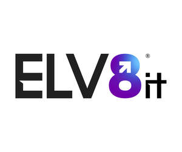

Trade Mark Journal No.2025/016 18 April 2025
UK00004182685 1 April 2025 (35,42)

- Class 35
- Information services relating to data processing; Marketing; Advertising and marketing; Advertising and marketing consultancy; Advertising and marketing services; Marketing consultancy; Digital marketing.
- Class 42
- Software consultancy services; Software consulting services; Software engineering services; Software development services; Hosting services, software as a service, and rental of software; Software maintenance services; Computer and software consultancy services; Computer software consultancy services; Software customisation services; Computer software consulting services; Software as a service [SAAS] services; Services for maintenance of computer software; Computer software maintenance services; Software as a service; Services for the leasing of computer software; Computer software advisory services; Computer software design services; Services for the design of computer software; Computer software rental services; Technical services for the downloading of software; Support and maintenance services for computer software; Computer software programming services; Consulting services in the field of software as a service [SaaS]; Software engineering services for data processing programs; Consulting services relating to computer software; Consultancy services in relation to computer software; Services for designing computer software; Services for updating computer software; Computer software technical support services; Services for the writing of computer software; Software engineering services for data processing; Installation and maintenance services for software; Design services relating to computer software; Development services relating to computer software application solutions; Advisory services relating to the use of computer software; Advisory services relating to computer software; Application service provider (ASP) services, namely, hosting computer software applications of others; Consultation services relating to computer software; Professional advisory services relating to computer software; Technical support services relating to computer software and applications; Consultancy and information services relating to software rental; Consultancy and information services relating to computer software design; Calibration services relating to computer software; Research and consultancy services relating to computer software; Consultancy and information services relating to the design, programming and maintenance of computer software; Consultancy and information services relating to software maintenance; Computer consultancy services; Advisory services relating to computer software design; Advisory services relating to computer software used for printing; Computer services; Advice and development services relating to computer software; Advisory services relating to computer software used for publishing; Advisory services relating to the rental of computers or computer software; Advisory services relating to computer software used for graphics; Computer integration services; Information technology [IT] support services [troubleshooting of software]; Computer consulting services; Computer and information technology consultancy services; Software as a service [SaaS] featuring software platforms for electronic gaming; Software as a service [SaaS]; Services for the design of electronic data processing software; Advisory and consultancy services relating to computer and video games software; Advisory and information services relating to computer software; Consultancy services relating to software used in the field of e-commerce; Consultancy services relating to computer systems; Design services for computer programs; Computer systems integration services; Software as a service [SaaS] featuring software for machine learning; Software as a service [SaaS] featuring software platforms for graphic design; Software as a service [SaaS] featuring computer software platforms for artificial intelligence; Computer engineering consultancy services; Editing services for computer programs; Providing information, advice and consultancy services in the field of computer software; Services for the design of computer systems; Design services for computers; Application service provider [ASP], namely, hosting computer software applications of others; Computer design services; Computer analysis services; Consultancy services relating to computer networks using mixed software environments; Information technology consulting services; Professional consultancy services relating to computer programming; Consultancy services relating to computer programming; Computer system integration services; Computer software consultancy; Consultancy (Computer software -); Computer programming services; Consultancy services for designing information systems; Provision of on-line support services for computer program users; Development services relating to computer systems; Programming of telecommunications software; Software as a service [SaaS] featuring software for deep learning; Application service provider services; Consultancy and information services relating to computer system integration; Consultancy services relating to computer networks; Computer program maintenance services; Computer diagnostic services; Information technology services; Information technology consulting; Information services relating to information technology; Providing information in the field of information technology; Information technology consultancy; Consultancy and information services in the field of information technology; Consultancy and information services relating to information technology; Provision of information relating to information technology; Engineering services relating to information technology; Information technology [IT] consultancy; Information technology support services; Consultancy and information services in the field of information technology architecture and infrastructure; Consultancy and information services relating to information technology architecture and infrastructure; Information technology [IT] consulting services; Consultancy services relating to information technology; Technical consultancy services relating to information technology; Providing information about the design and development of computer software, systems and networks.
EFFVISION BUSINESS SOLUTIONS LTD